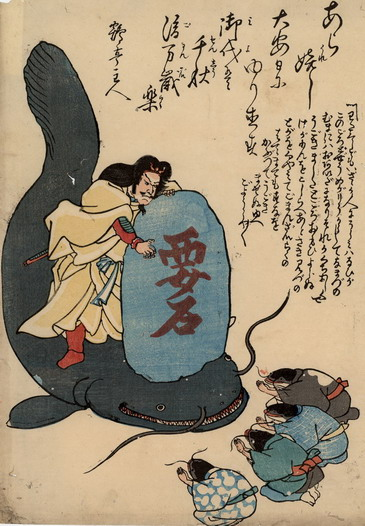

鹿島大明神に要石で押さえつけられている大鯰。開いた口には尖った小さな歯が並んでいる。要石と鹿島大明神に向かって4体の鯰が両手を合わせて謝っている。皆着物を身にまとっており、体は人間のものである。向かって一番右側の鯰は黒い着物の背に、一番左側の鯰は青い着物の地全体に瓢箪の柄が入っている。
出典：親書誌：U426_nichibunken_0188：あら嬉し大安日にゆり直す；アラウレシタイアンニチニユリナオス／日付：2010／資源識別子：U426_nichibunken_0188_0001_0000
Copyright (c)2010- International Research Center for Japanese Studies, Kyoto, Japan. All rights reserved.